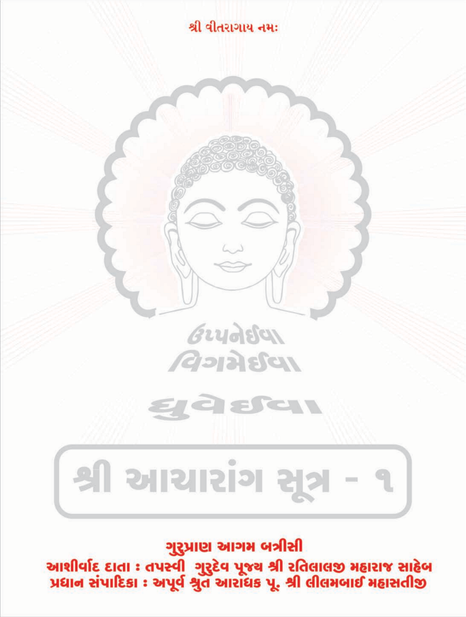
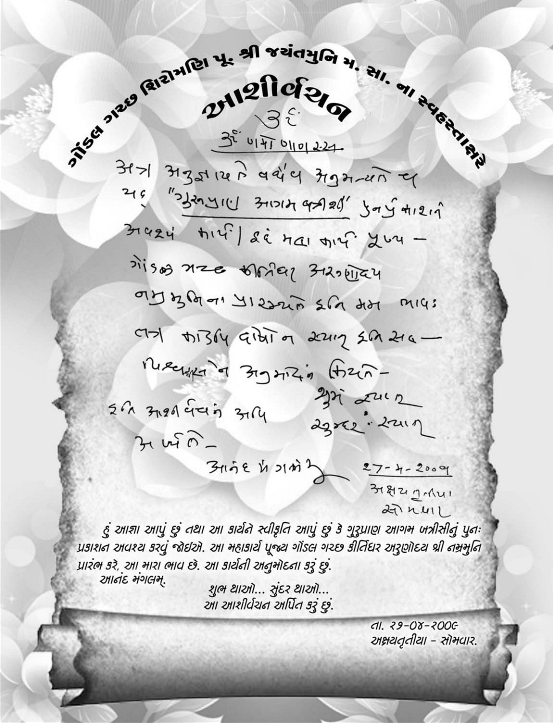
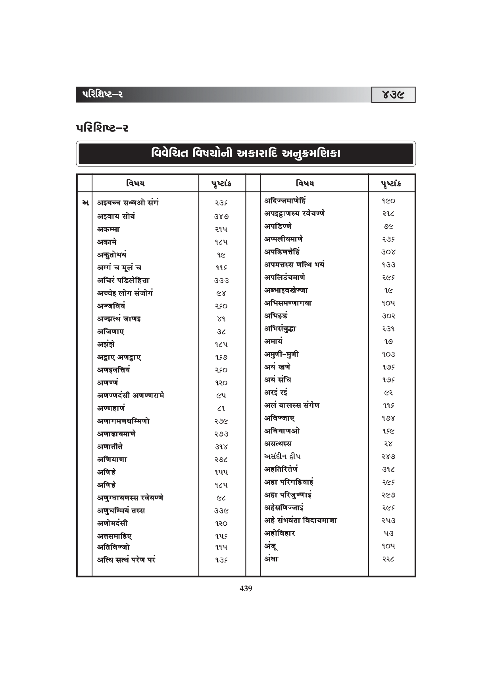
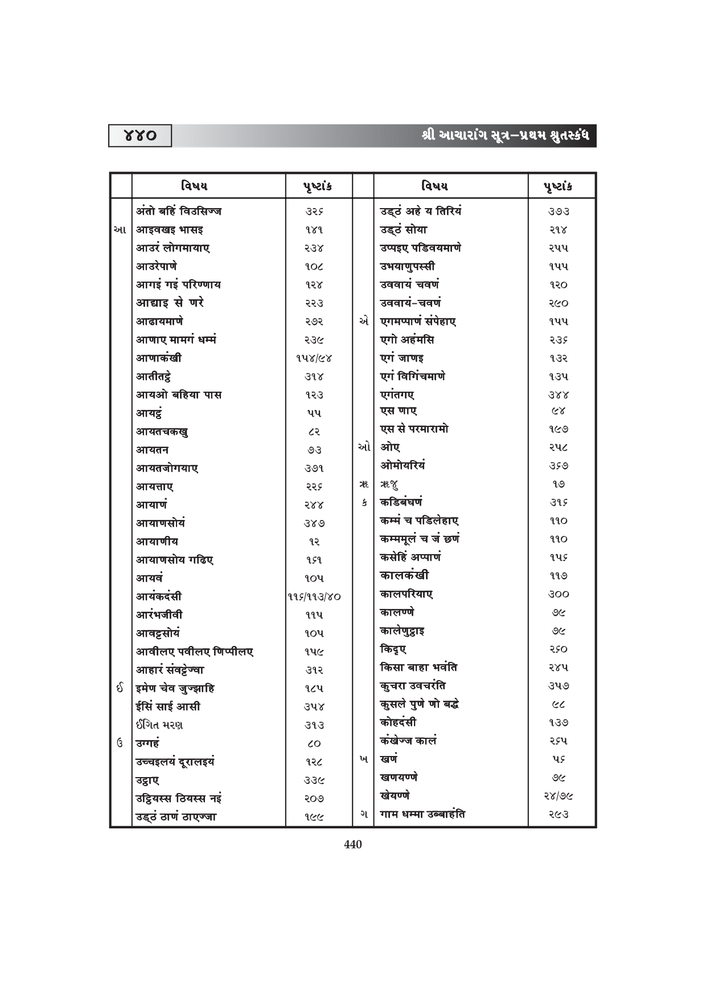
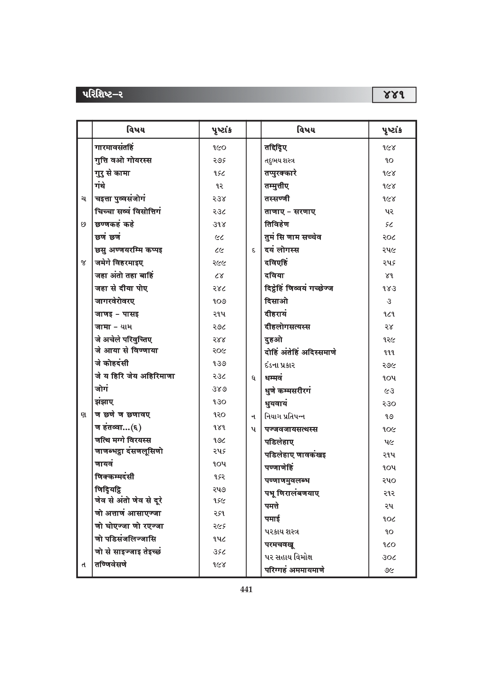
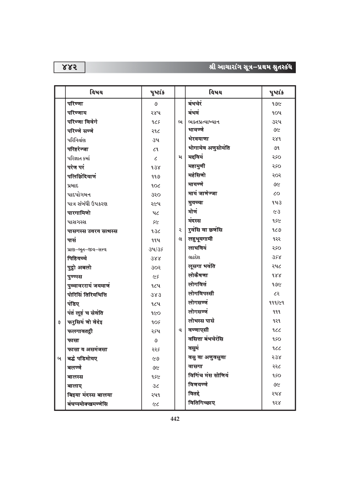
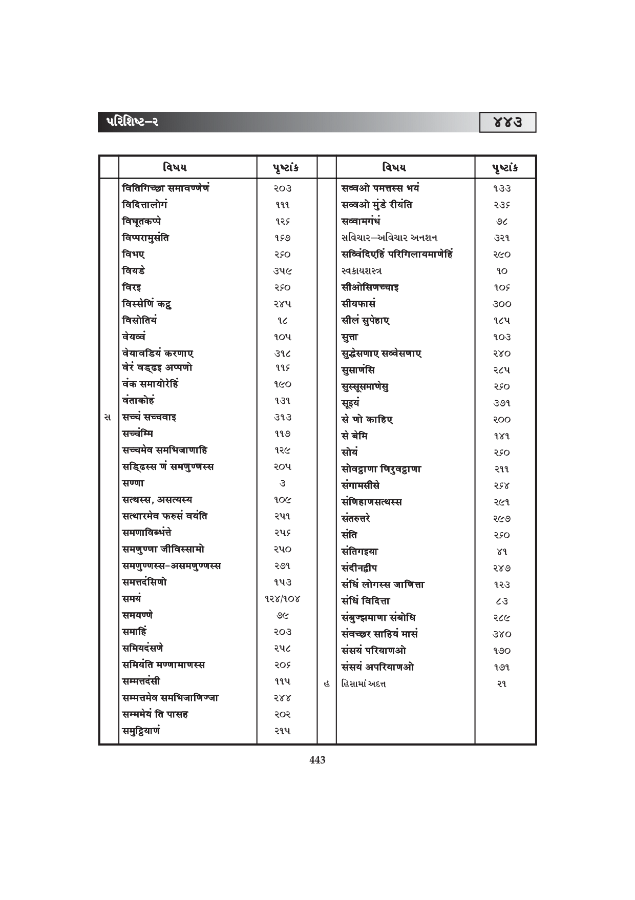
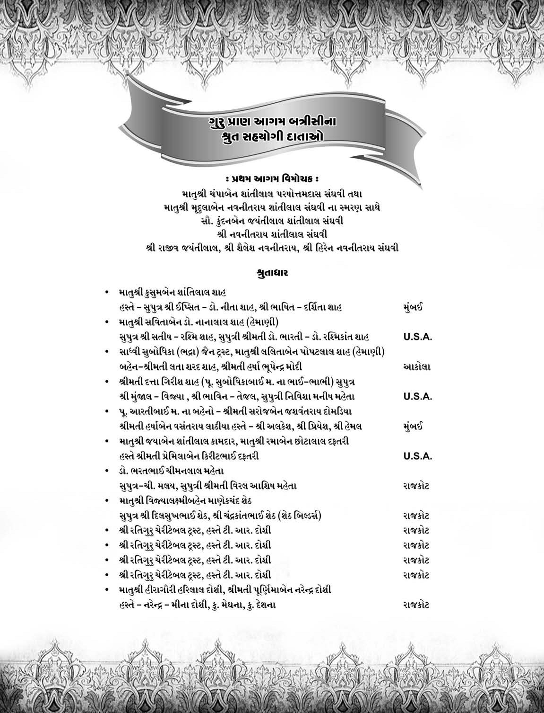

This file is converted from html from Document file so it can be indexed by Google. For Original formats click on the following links as required to download the files.
 Link to EPUB File of this Book
Link to EPUB File of this Book
 Link to Original PDF File of this Book
Link to Original PDF File of this Book






| નામ | ડુંગરસિંહભાઇ . |
| જન્મ | વિ.સં. ૧૭૯૨ : |
| જન્મભૂમિ | માંગરોળ. |
| પિતાશ્રી | ધર્મનિષ્ઠ શ્રીકમળસિંહભાઇ બદાણી. |
| માતુશ્રી | સંસ્કાર સંપન્ના શ્રીમતી હીરબાઇ . |
| જન્મસંકેત | માતાએ સ્વપ્નમાં લીલોછમ પર્વત અને કેસરી સિંહને પોતાની સમીપે આવતો જોયો . |
| ભાતૃભગિની | ચારબેન - બેભાઇ. |
| વૈરાગ્ય નિમિત્ત | પૂ. શ્રીરત્નચંદ્રજી મ.સા.નો ઉપદેશ. |
| સંચમ સ્વીકાર | વિ.સં. ૧૮૧૫કારતક વદ - ૧૦ દિવબંદર. |
| સદ્ગુરુદેવ | પૂ. શ્રીરત્નચંદ્રજી મ.સા. |
| સહદીક્ષિત પરિવાર |
સ્વયં , માતુશ્રી હીરબાઇ , બહેન વેલબાઇ,
ભાણેજી - માનકુંવરબેન અને ભાણેજ - હીરાચંદભાઇ. |
| સંચમ સાધના | અપ્રમત્તદશાની પ્રાપ્તિ માટે સાડા પાંચ વર્ષ નિદ્રાત્યાગ , જ્ઞાનારાધના , ધર્મશાસ્રો , દર્શનશાસ્રો અને તત્ત્વજ્ઞાનનો અભ્યાસ. |
| તપ આરાધના | રસેન્ટ્રિય વિજયના વિવિધ પ્રયોગો , મિતાહાર. સ્વાધ્યાય , સાડાપાંચ વરસ નિદ્રાત્યાગ , ધ્યાનરૂપ આભ્યંતર તપ. |
| ગોંડલ ગચ્છ સ્થાપના તથા આચાર્ય પદ પ્રદાન | વિ.સં. ૧૮૪૫ મહાસુદ - પ ગોંડલ. |
| જ્વલંત ગુણો | વિનય , વિવેક , વિચક્ષણતા , વિરક્તિ , કરૂણા , સમયસૂચકતા વગેરે… |
| પ્રમુખ શીષ્ય | પૂ. આચાર્ય શ્રી ભીમજી સ્વામી |
| પ્રમુખ શીષ્યા | પૂ. શ્રી હીરબાઈ મ., પૂ. શ્રી વેલબાઈ મ. પૂ. શ્રી માનકુંવરબાઇ મ. |
| સાધુસંમેલન | વિ. સં. ૧૮૬૧માં આજ્ઞાનુવર્તી ૪૫ જેટલા સાધુ- સાધ્વીજીઓનું સંમેલન કરી સંતોની આચાર વિશુધધિ માટે ૧૩ નિયમો બનાવ્યાં. |
| વિહાર ક્ષેત્ર | કાઠિયાવાડ , ઝાલાવાડ: કચ્છ , માંગરોળ , વેરાવળ , પોરબંદર , દીવબંદર આદિ કંઠાળ પ્રદેશમાં ગ્રામાનુગ્રામ. |
| પ્રતિબોધિત શ્રાવકવર્ય | શ્રી શોભેચંદ્ર કરસનજી શાહ - વેરાવળ. |
| સ્થિરવાસ | વિ.સં. ૧૮૭૧ ચૈત્ર સુદ - ૧૫ થી ગોંડલમાં. |
| અનશન આરાધના | વિ. સં. ૧૮૭૭ ફાગણ સુદ - ૧૩ થી અનશન પ્રારંભ , વેશાખ સુદ - ૧૫ સમાધિમરણ. |
| આયુષ્ય | ૮૪ વર્ષ સંયમ પર્યાય - ૬૨ વર્ષ , આચાર્ય પદ - ૩૨ વર્ષ. |
| ઉત્તરાધિકારી | આચાર્ય પૂ. શ્રી ભીમજી સ્વામી. |
| ઉપનામ | ગચ્છાધિપતિ , નિદ્રાવિજેતા , યુગપ્રધાન , એકાવતારી. |
| પાટપરંપરા |
ગોંડલ ગચ્છાધિપતિ આચાર્ય પ્રવર ગુરૂદેવ પૂ. શ્રીડુંગરસિંહજી મ.સા.
દ્રિતીય પટ્ધર - આચાર્ય પૂ. શ્રી ભીમજી સ્વામી. તૃતીય પટ્ધર - આચાર્ય પૂ. શ્રી નેણસી સ્વામી. ચતુર્થ પટ્ધર - આચાર્ય પૂ. શ્રી જેસંગજી સ્વામી. પંચમ પટ્ધર - આચાર્ય પૂ. શ્રી દેવજી સ્વામી. મહાતપસ્વી પૂ. શ્રી જયચંદ્રજી સ્વામી યુગદષ્ટા તપસ્વી પૂ. શ્રી માણેકચંદ્રજી મ.સા. સૌરાષ્ટ કેસરી ગુરુદેવ પૂ. શ્રી પ્રાણલાલજી મ.સા. તપસમ્રાટ ગુરુદેવ પૂ. શ્રી રતિલાલજી મ.સા. |
| વિદ્યમાન વિચરતો પરિવાર | ૧૧ સંતો , ૩૦૦ જેટલા સતિજીઓ. |
| શુભ નામ | પ્રાણલાલભાઈ |
| જન્મભૂમિ | વેરાવળ. |
| પિતા | શ્રીમાન શ્રી કેશવજીભાઈ મીઠાશા. |
| માતા | સંસ્કાર સંપજ્ઞા કુંવરબાઈ. |
| જ્ઞાતિ | વીસા ઓસવાળ. |
| જન્મદિન | વિ. સં. ૧૯૫૪ , શ્રાવણ વદ પાંચમ , સોમવાર. |
| ભાતૃ-ભગિની | ચાર ભાઈ , ત્રણ બહેનો. |
| વૈરાગ્ય બીજારોપણ | બે વર્ષની બાલ્યવયે. |
| વૈરાગ્ય ભાવ-પ્રગટીકરણ | ૧૩ વર્ષની કુમાર અવસ્થામાં. |
| સંયમ સ્વીકાર | ૨૧ માં વર્ષે વિ. સં. ૧૯૭૮ ફાગણ વદ છઠ્ઠ , ગુરવાર. તા. ૧૩-૩-૧૯૨૦ |
| દીક્ષા ભૂમિ | બગસરા-દરબાર વાજસુરવાળાના ઉઘ્યાનમાં વટવુક્ષ નીચે. |
| ગચ્છ પરંપરા | ગોંડલ ગચ્છ. |
| સંયમદાતા | મહાતપસ્વી પૂ. જયચંદ્રજી મ.સા. |
| શિક્ષા દાતા | પરમ શ્રદ્ધેય તપસ્વી માણેકચંદ્રજી મ. સા. |
| ધાર્મિક અભ્યાસ | આગમજ્ઞાન , તત્ત્વજ્ઞાન , કથા સાહિત્ય , રાસ સાહિત્ય , વ્યાકરણ , મહાકાવ્યો , કર્મસાહિત્ય , જૈનેતર ગ્રંથોનું વિશાળ અવલોકન , દર્શન શાસ્ત્રના તજજ્ઞ. |
| સંઘ નેતૃત્વ | ત્રણ વર્ષની દીક્ષા પર્યાયે તપસ્વી પૂ. માણેકચંદ્રજી.મ. સા. તા સંથારાના સમયથી. |
| સેવા શુશ્રૂષા | વડીલ સાત ગુરુભ્રાતા અને અનેક સંતોની સેવા કરી. |
| સમાજોત્કર્ષ | ચતુર્વિધ સંઘ સમાધિ માટે તારવેલા ત્રણ સિદ્ધાંત |
| ૧ ) લોકના પરોપકાર માટે દાનધર્મનિપ્રધાનતા | |
| ૨ ) અખંડનવાદ | |
| ૩ ) નીતિ અને પ્રામાણિકતાનું આંદોલન, જેન-જૈનેતરો (કાઠી , દરબાર , આહિર)ને સપ્ત વ્યસનથી મુક્તિ , અનેક સ્થાને સાધર્મિક રાહત યોજના. | |
| જ્ઞાન પ્રસાર | રાજકોટ , ગોંડલ , જેતપુર , ધોરાજી , વડિયા , વેરાવળ , પોરબંદર , માંગરોળ , જામનગર , ભાવનગર વગેરે અનેક સ્થાને જ્ઞાન ભંડાર , વિધાલયની સ્થાપના અને જીર્ણોધ્ધાર. |
| દેહ વૈભવ | લાવણ્યમયી મુદ્રા , સૂર્ય સમ તેજસ્વી મુખ , ચંદ્રસમી શાંત આભા , વિશાળ ભાલ , નૂરભર્યા નયનો , ઘૂઘરાળા કેશ , વીણા જેવો સુમધુર કંઠ અને સિંહ જેવી ગર્જના. |
| આભ્યંતર વૈભવ | વિનય સંપજ્ઞતા , વિવેક , સાદાઈ , પ્રેમ , વૈરાગ્ય , સેવા , પ્રવચન-પટુતા , ગુરુચરણ સેવા , દીર્ઘ દષ્ટિ , ત્યાગમસ્તી. |
| વિહાર ક્ષેત્ર | સૌરાષ્ટ્ર , ગુજરાત. |
| ગોંડલ ગચ્છ સંમેલન | વિ. સં. ૨૦૦૭માં ગચ્છ એક્યતા માટે મહત્ત્વનું યોગદાન. |
| ઉપનામ | પંજાબ કેસરી કાશીરામજી મ. સા. દારા પ્રદત્ત "સૌરાષ્ટ્ર કેસરી" |
| સ્વહસ્તે દીક્ષિત પરિવાર | ચાર સંત- તપોધની પૂ. રતિલાલજી મ. સા. , અનશન આરાધક તપસ્વી પૂ. જગજીવનજી મ. સા. , પૂ. નાના રતિલાલજી મ. સા. , પરમ દાર્શનિક પૂ. જયંતમુનિજી મ. સા. , પૂ. મોટા પ્રભાબાઈ મ. આદિ ૧૫ સતીજી. |
| અંતિમ ચાતુર્માસ | બગસરા. |
| દેહ વિલય | વિ. સં. ૨૦૧૩ માગસર વદ તેરસ , શનિવાર પ્રાતઃ ૭-૩૦ કલાકે ઈ. સ. ૨૯-૧૨-૧૯૫૬. |
| અંતિમ વિધિ | સાતલડી નદીના કિનારે (બગસરા) |
| શિષ્ય પરિવાર | વર્તમાને ૧૧૮ સંત-સતિજીઓ "પ્રાણ પરિવાર" ના તમે સમગ્ર ભારતમાં પ્રસિદ્ધ છે. |
| શુભ નામ | રતિલાલભાઈ |
| જ ન્મસ્થાન | પરબવાવડી (સૌરાષ્ટ્ર) |
| જન્મદિન | આસોવદ અમાસ વિ.સં. ૧૯૮૯ |
| પિતા | શ્રીમાન માધવજીભાઈ રૈયાણી |
| માતા | સદાચાર સંપજ્ઞા જમકુબાઈ |
| વૈરાગ્ય ભાવ | ૧૭ માવર્ષે |
| દીક્ષા | ફાગણ વદ પાંચમ , ગુરવાર વિ. સં. ૧૯૮૯-જૂનાગઢ |
| ગુરુદેવ | સૌરાષ્ટ્ર કેસરી પૂ. પ્રાણલાલજી મ.સા. |
| ગચ્છ પરંપરા | ગોંડલ ગચ્છ. |
| અભ્યાસ | યોગ વ્યાવહારિક- પાંચ ધોરણ , ધાર્મિક ૧૯ આગમ કંઠસ્થ , શ્વેતામ્બર-દિગંબર સાહિત્ય , કાર્મગ્રંથિક સાહિત્ય , દાર્શનિક સાહિત્ય , વ્યાકરણ સાહિત્ય |
| સાધના યોગ | રાત્રિ-દિવસ નિરંતર જાગૃતદશાએ આત્મસાધના અલ્પનિદ્રા. |
| સેવાયોગ | વડીલ વૃદ્ધ ૯ સંતોની સેવા કરી. |
| તપયોગ | ૧૯ વર્ષ એકાંતર ઉપવાસ , ૯૯૯ આયંબિલ તપ (સાગાર) , ૧૯ વર્ષ પાણીનો ત્યાગ , ૯ વર્ષ મકાઈ સિવાય શેષ અનાજ ત્યાગ. |
| મૌનયોગ | દિક્ષા પછી ૯ વર્ષ એકાંત મૌનસાધના ઈ.સ . ૧૯૯૨ નવેમ્બરથી આજીવન મોન આરાધના. |
| પુન્યપ્રભાવ | ગુરુદેવના પુણ્ય પ્રભાવે અનેક આત્માઓએ માસખમણ આદિ નાની મોટી તપશ્ચર્યાઓ તથા હજારોની સંખ્યામાં વર્ષીતપની" આરાધના કરી છે. તેમજ દાન , ચત અને ભાવની વૃદ્ધિ થઈ છે. |
| વિહાર ક્ષેત્ર | ગુજરાત , મહારાષ્ટ્ર , મધ્યપ્રદેશ , ઓરિસ્સા , બિહાર , બંગાળ |
| જ્ઞાન અનુમોદન | શ્રમણી વિદ્યાપીઠના પ્રેરક બની ૩૦ શિષ્યાઓ અને ૩૦ વૈરાગી બહેનોને અભ્યાસાર્થે રહેવાની આજ્ઞા આપી. ત્રણ સામૂહિક ચાતુર્માસ કરાવી શાસ્ત્રવાચના કરાવી. |
| દીક્ષા પ્રદાનસખ્યા | ૧૪૫ મુમુક્ષુઓને અણગાર બનાવ્યા. |
| આચરિત સૂત્રો | જતું કરવું , ગમ ખાવો , વાદ-વિવાદ કે દલીલ ન કરવા , જે થાય તે સારા માટે , કોઈ પણ જીવની ટીકા કે નિંદા ન કરવી. |
| જીવંત ગુણો | વિશાળતા , ઉદારતા , માધ્યસ્થતા , સહિષ્ણુતા , ભદ્રિકતા , સમાધાન વૃત્તિ , જ્ઞાનરચિ. |
| અનશન પ્રત્યાખ્યાન | ઈ. સ. ૧૯૯૨ રાજકોટમાં પૂ. ભાગ્યવંતાબાઈ મ. ને ૫૯ દિવસની અનશન આરાધના કરાવી. |
| અંતિમ ચાતુર્માસ | રાજકોટ , શ્રી રોયલપાર્ક સ્થાનકવાસી જૈન મોટા સંઘ સંચાલિત ઓમાનવાળા ઉપાશ્રય. (૧૯૯૭) |
| મહાપ્રયાણ | રાજકોટ , તા. ૮-૨-૧૯૯૮ મહા સુદ ૧૧॥ રવિવાર મધ્યાહ કાળે ૧.૩૫ કલાકે. |
| અંતિમ દર્શન તથા પાલખી | શ્રી રોયલ પાર્ક સ્થાનકવાસી જૈન મોટા સંઘ , રાજકોટ. |
| અંતિમક્રિયા સ્થાન | તપસમ્રાટ તીર્થધામ" , રાજકોટ-અમદાવાદ હાઈ-વે , સાત હનુમાન સામે રાજકોટ . |
|
સૂત્રનું નામ |
અનુવાદિકા |
|
શ્રી આચારાંગ સૂત્ર(માગ ૧-૨) |
પૂ. હસુમતીબાઈ મ. , પૂ. પુષ્પાબાઈ મ. |
|
શ્રી સૂયગડાંગ સૂત્ર (ભાગ ૧-૨) |
પૂ. ઉર્મીલાબાઈ મ. |
|
શ્રી ઠાણાંગ સૂત્ર (ભાગ ૧-૨) |
પૂ. વીરમતીબાઈ મ. |
|
શ્રી સમવાયાંગ સૂત્ર |
પૂ. વનીતાબાઈ મ. |
|
શ્રી ભગવતી સૂત્ર(૧ થી પ ભાગ) |
ડોં. આરતીબાઈ મ. |
|
શ્રી જ્ઞાતા સૂત્ર |
પૂ. સુમનબાઈ મ. |
|
શ્રી ઉપાસકદશાંગ સૂત્ર |
પૂ. ઉર્વશીબાઈ મ. |
|
શ્રી અંતગડદશાંગ સૂત્ર |
પૂ. ભારતીબાઈ મ. |
|
શ્રી અનુત્તરોવવાઈ સૂત્ર |
પૂ. સન્મતિબાઈ મ. |
|
શ્રી પ્રશ્નવ્યાકરણ સૂત |
પૂ. સુનિતાબાઈ મ. |
|
શ્રી વિપાક સૂત્ર |
પૂ. ઉષાબાઈ મ. |
|
શ્રી ઉવવાઈ સૂત્ર |
પૂ. કલ્પનાબાઈ મ. |
|
શ્રી રાજપ્રશ્રીય સૂત્ર |
પૂ. બિંદુ-રૂપલ દ્રય મ. |
|
શ્રી જીવાભિગમ સૂત્ર |
પૂ. પુનિતાબાઈ મ. |
|
શ્રી પ્રજ્ઞાપના સૂત્ર(ભાગ-૧ થી ૩) |
પૂ. સુધાબાઈ મ. |
|
શ્રી જંબૂદ્વિપપ્રજ્ઞપ્તિ સૂત્ર |
પૂ. મુક્તાબાઈ મ. |
|
શ્રી જયોતિષગણરાજ પ્રજ્ઞપ્તિ સૂત્ર (ચંદરપ્રજ્ઞપ્તિ , સૂર્યપ્રજ્ઞપ્તિ) |
પૂ. રાજેમતીબાઈ મ. |
|
શ્રી ઉપાંગસૂત્ર(શ્રી નિરયાવલિકાદિ) |
પૂ. કિરણબાઈ મ. |
|
શ્રી ઉત્તરાધ્યયન સૂત્ર (ભાગ-૧ , ૨) |
પૂ. ડો. અમિતાબાઈ મ. પૂ. સુમતિબાઈ મ. |
|
શ્રી દશવૈકાલિક સૂત્ર |
પૂ. ગુલાબબાઈ મ. |
|
શ્રી નંદી સૂત્ર |
પૂ. પ્રાણકુવરબાઈ મ. |
|
શ્રી અનુયોગદ્દાર સૂત્ર |
પૂ. સુબોધિકાબાઈ મ. |
|
શ્રી નિશીથ સૂત્ર |
પૂ. લીલમબાઈ મ. |
|
શ્રી ત્રણ છેદ સૂત્ર |
પૂ. ડો. ડોલરબાઈ મ. |
|
શ્રી આવશ્યક સૂત્ર |
પૂ. રૂપાબાઈ મ. |
| ક્રમ | વિષય | અસ્વાધ્યાયકાલ |
| આકાશસંબંધી દસ અસ્વાધ્યાય | ||
| ૧ | આકાશમાંથી મોટો તારો ખરતો દેખાય | એક પ્રહર |
| ૨ | દિગ્દાહ-કોઈ દિશામાં આગ જેવું દેખાય | જ્યાં સુધી રહે ત્યાં સુધી |
| ૩ | અકાલમાં મેઘગર્જના થાય [વર્ષાઋતુ સિવાય] | બે પ્રહર |
| ૪ | અકાલમાં વીજળી ચમકે [વર્ષાઋતુ સિવાય] | એક પ્રહર |
| પ | આકાશમાં ઘોરગર્જના અને કડાકા થાય | આઠ પ્રહર |
| ૬ | શુક્લપક્ષની ૧ , ૨ , ૩ની રાત્રિ | એક પ્રહર |
| ૭ | આકાશમાં વીજળી વગેરેથી યક્ષનું ચિહ્ન દેખાય | જ્યાં સુધી દેખાય ત્યાં સુધી |
| ૮ | કરા પડે | જ્યાં સુધી રહે ત્યાં સુધી |
| ૯ | ધુમ્મસ | જ્યાં સુધી રહે ત્યાં સુધી |
| ૧૦ | આકાશ ધૂળ-રજથી આચ્છાદિત થાય | જ્યાં સુધી રહે ત્યાં સુધી |
| ઔદારિક શરીર સંબંધી દસ અસ્વાધ્યાય | ||
| ૧૧ | તિર્યંચ , મનુષ્યના હાડકાં બળ્યા , ધોવાયા વિના હોય , | ૧૨વર્ષ |
| ૧૨-૧૩ | તિર્યચના લોહી , માંસ ૬૦ હાથ , મનુષ્યના ૧૦૦ હાથ [ફૂટેલા ઈંડા હોય તો ત્રણ પ્રહર] | દેખાય ત્યાં સુધી |
| ૧૪ | મળ-મૂત્રની દુર્ગંધ આવે અથવા દેખાય | જ્યાં સુધી રહે ત્યાં સુધી |
| ૧૫ | સ્મશાન ભૂમિ | [૧૦૦ હાથની નજીક હોય] |
| ૧૬ | ચંદ્રગ્રહણ-ખંડ/પૂર્ણ | ૮/૧૨ પ્રહર |
| ૧૭ | સૂર્યગ્રહણ-ખંડ/પૂર્ણ | ૧૨/૧૬ પ્રહર |
| ૧૮ | રાજાનું અવસાન થાય તે નગરીમાં | નવા રાજા થાય ત્યાં સુધી |
| ૧૯ | યુદ્ધસ્થાનની નિકટ | યુદ્ધ ચાલે ત્યાં સુધી |
| ૨૦ | ઉપાશ્રયમાં પચેન્દ્રિયનું કલેવર | જ્યાં સુધી હોય ત્યાં સુધી |
| ચાર મહોત્સવ-ચાર પ્રતિપદા | ||
| ૨૧-૨૮ | અષાઢ , આસો , કારતક અને ચૈત્રની પૂર્ણિમા અને ત્યાર પછીની એકમ | સંપૂર્ણ દિવસ-રાત્રિ |
| ૨૯-૩૨ | સવાર , સાંજ , મધ્યાહ્ન અને અર્ધરાત્રિ. | એક મુહૂર્ત |
|
બોધિ બીજ દીક્ષા-શિક્ષા દોરે બાંધી , મુક્ત-લીલમ તણા તારક થયા , એવા ગુરુણી "ઉજમ-ફૂલ અંબામાત" ને , વંદન કરું ભાવભર્યા ; વીતરાગ વચન વિરુદ્ધ લખાયું હોય તો , માગુ પુનઃ ક્ષમાપના , મંગલ મેત્રી પ્રમોદ ભાવમાં વહો સહુ , એવી કરું વિજ્ઞાપના. |
|
પ્રથમ અધ્યયન–શસ્ત્રપરિજ્ઞા પહેલો ઉદ્દેશક |
| જ પરિજ્ઞાતકર્મા મુનિ હોય છે. | –એમ હું કહું છું અર્થાત્ ભગવાને આ પ્રમાણે કહ્યું છે. ।। પ્રથમ ઉદ્દેશક સમાપ્ત ।। |
|
બીજું અધ્યયન–લોક વિજય પહેલો ઉદ્દેશક |
| સમજીને કુશળ પુરુષ કર્મબંધનોથી લેપાય નહિ, સંસારમાં લેપાય નહીં. ।। બીજો ઉદ્દેશક સમાપ્ત ।। | – એમ ભગવાને કહ્યું છે. |
|
ત્રીજું અધ્યયન–શીતોષ્ણીય પહેલો ઉદ્દેશક |
| લોકસંજ્ઞાનો ત્યાગ કરતાં મતિમાન મુનિ સંયમમાં પરાક્રમ કરે. ।। પ્રથમ ઉદ્દેશક સમાપ્ત ।। | –એમ ભગવાને કહ્યું છે. |
|
ચોથું અધ્યયન–સમ્યક્ત્વ પહેલો ઉદ્દેશક |
| ઉત્તમજ્ઞાની સાધક ! તું કષાયની અગ્નિથી કયારે ય પણ પ્રજવલિત ન થા. ।। ત્રીજો ઉદ્દેશક સમાપ્ત ।। | – એમ ભગવાને કહ્યું છે. |
|
પાંચમું અધ્યયન–લોકસાર પહેલો ઉદ્દેશક |
| પાલન કર. | – એમ ભગવાને કહ્યું છે. ।। બીજો ઉદ્દેશક સમાપ્ત ।। |
|
છઠ્ઠું અધ્યયન–ધૂત પહેલો ઉદ્દેશક |
|
આઠમું અધ્યયન–વિમોક્ષ પહેલો ઉદ્દેશક |
| 1. | કોઈ પણ પ્રકારના સંકટમાં આવેલા સાધુને જોઈને અથવા સાધુને આવતી મુશ્કેલીઓ જોઈને કોઈભાવિક ભક્ત તેની સામે આહારાદિ બનાવી દે, ખરીદે, છીનવીને લાવે તથા અન્ય કોઈ પણ પ્રકારે સામે લાવીને આપે તથા ઉપાશ્રય બનાવી દેવાનો પ્રસ્તાવ રાખે.સાધુને કહ્યા વિના, તેની વાત સાંભળ્યા વિના પોતાના મનથી જ ભક્તિવશ આહારાદિ બનાવીને કે |
| ર. |
| 1. | અભિગ્રહકાલમાં ક્યારેક હું ગ્લાન હોઉં, સાધર્મિક ભિક્ષુ અગ્લાન હોય અને સ્વેચ્છાએ તેઓ સેવાકરશે તો હું સહર્ષ સ્વીકાર કરીશ.મારા સાધર્મિક ભિક્ષુ ગ્લાન હોય, હું અગ્લાન હોઉં તો, તે ન કહે તોપણ નિર્જરાદિની દષ્ટિએ હું તેની સેવા કરીશ. |
| ર. |
| 1. | ક્રમશઃ આહારને ઓછો કરે, બેઆસણા, એકાસણા, વિગયત્યાગ કરે, આયંબિલ ઈત્યાદિ કરે. આપ્રકારનો ક્રમિક અભ્યાસ ચાલુ કરે.કષાયોને ઓછા કરે, તેનું ઉપશમન કરે, વચનસંયમ, કાયસંયમ રાખતાં પ્રવૃત્તિઓ ઘટાડતાં ક્રોધાદિ દરેક કષાયથી પૂર્ણ શાંત થવાનો પ્રયત્ન કરે.શરીર તેમજ મનને સમાધિસ્થ, શાંત તથા સ્થિર રાખવાનો અભ્યાસ કરે. |
| ર. | |
| 3. |
|
નવમું અધ્યયન–ઉપધાનશ્રુત પહેલો ઉદ્દેશક |
| 1. | ઊર્ધ્વલોક–આકાશ દર્શન, અધોલોક–ભૂગર્ભ દર્શન અને મધ્યલોક–તિર્યક્લોક દર્શન. આ ત્રણેય લોકમાં રહેલા જીવાદિ તત્ત્વોનું અને તેના દ્રવ્ય ગુણ પર્યાયનું નિત્ય અનિત્યતાનું ભગવાન ધ્યાન કરતા હતા.દીર્ઘદર્શી સાધક–ઊર્ધ્વગતિ, અધોગતિ અને તિર્યક્ગતિમાં જવાના જે કારણો છે, તેના ભાવોને ત્રણે લોકના દર્શનથી જાણતા હતા.આંખોને ખુલ્લી રાખી અનિમેષદષ્ટિથી ઊર્ધ્વ, અધો અને મધ્યલોકના બિંદુ ઉપર ચિત્તને સ્થિર કરીને ત્રણે લોકને જાણતા હતા.ઊર્ધ્વ, અધો અને મધ્યલોકના જીવો વિષય–વાસનામાં આસક્ત થઈને શોકથી પીડિત છે. આ પ્રમાણે દીર્ઘદર્શી ત્રિલોકનું દર્શન કરતા હતા.લોકનો એક અર્થ એ છે કે–ભોગ્યવસ્તુ અથવા વિષય. શરીર ભોગ્યવસ્તુ છે. તેના ત્રણ ભાગ |
| ર. | |
| 3. | |
| 4. | |
| પ. |





